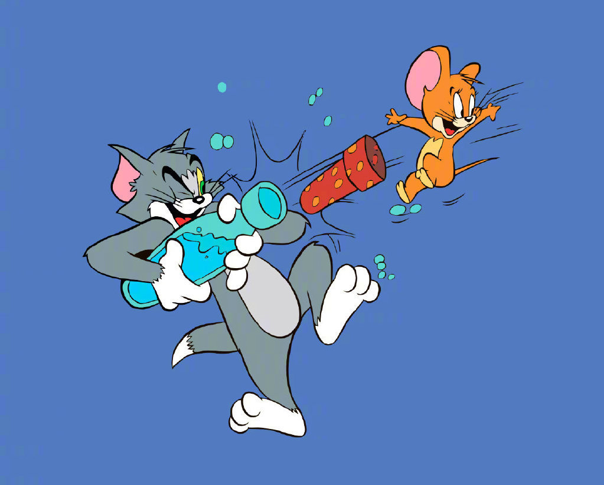

|
|
90年代引进中国后更是成为了一部老少皆宜的动画片，给一代又一代不同年龄、不同国家的观众带来了无数欢乐。
这套动画片完全以闹剧为特色，情节十分热闹。
这部“机灵老鼠”与“笨猫”的故事，堪与《米老鼠和唐老鸭》的故事相媲美。
|  |
《猫和老鼠》是由汤姆猫和杰瑞鼠搭档出演的一部经典短篇动画剧集。
从1940年问世以来,猫和老鼠在国内的火热程度自然也不言而喻。
凭心而论，汤姆事实上是比杰瑞更有同情心的，
这样的一只虽然有着各种各样的“缺点”的好猫。
整天被一个小小的老鼠弄得狼狈不堪，确实让人于心不忍。
汤姆易怒而敏感，杰瑞则独立且投机。在每集动画片的结尾。
通常是杰瑞以洋洋自得来显示自己的胜利，而TOM则是悲壮的失败者。
但是，也有可能出现以下结局：在很少的时候，汤姆会获得胜利；偶尔也有两人携手搭档的情况。
不过，总得来说，汤姆和杰瑞握手言欢只能是小插曲——永无止境的追逐才是汤姆和杰瑞作为存在的永恒主题。
|
| |